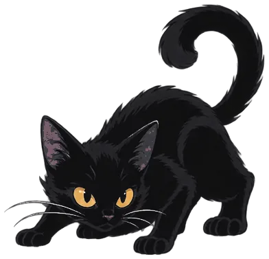

Ouvrir son accès, lire son solde, allumer les alertes, puis démonter les arnaques qui visent le CCP, BaridiMob, Edahabia et la CIB : la banque en ligne, quartier par quartier.
Ce livre est de l’éducation, pas un conseil bancaire, financier ou juridique. Numidea Labs n’est lié à aucune banque ni à Algérie Poste.
Les messages, noms, montants et liens des exercices sont inventés. Pour un vrai numéro ou une vraie démarche, passez par l’appli ou le site officiel de votre banque, ou par le guichet.
Touchez chaque porte : ce qu’elle fait bien, et son point faible.
Le guichetUne personne en face, une pièce d’identité, un reçu papier. Lent et limité aux heures d’ouverture, mais c’est là qu’on règle ce que l’appli ne sait pas faire. Le point faible : la file, et l’inconnu « serviable » qui propose de vous aider au distributeur.
Le site webGrand écran, relevés faciles à lire et à télécharger. Le point faible : un faux site qui imite le vrai. Tapez l’adresse vous-même ou gardez-la en favori ; n’y arrivez jamais par un lien reçu.
L’appliTout dans la poche : solde, virements, alertes, blocage de carte. Le point faible : un téléphone perdu sans verrouillage, ou une fausse appli. Installez-la seulement depuis le store officiel, par le lien du site de votre banque.
CHEZ NOUS, AILLEURS
En Algérie, Algérie Poste propose le guichet, un espace web et l’appli BaridiMob, et chaque banque a son appli. Ailleurs, certaines banques n’existent qu’en ligne, sans aucun guichet.
Lina choisit sa porte · J’ouvre l’appli ou je tape l’adresse moi-même. Un lien reçu n’est pas une porte.
L’inscriptionKūroOuvrir son accès sans se faire piéger

Le dossier · Acte I · 2 / 11
L’inscription
Ouvrir son accès sans se faire piéger · avec Kūro
Pour activer l’appli, Lina doit prouver qui elle est. Le même jour, un inconnu « du service client » appelle pour l’aider.
La règle
Prouver son identité est normal : cela se fait dans l’appli officielle ou au guichet. Le code reçu par SMS ne se donne à personne, même pas à « la banque ».
Touchez les deux étapes qui ne devraient jamais arriver.
Étape normale.
Une appli hors du store officiel peut être un faux qui lit vos codes.
Étape normale.
Le code reçu par SMS ne se donne à personne. Algérie Poste rappelle qu’elle ne le demande jamais.
Étape normale.
Étape normale.
0/2 pièges trouvés
CHEZ NOUS, AILLEURS
Selon la banque et le pays, l’identité se vérifie au guichet, en vidéo ou par selfie. Peu importe la méthode : elle se fait dans l’appli ou l’agence officielle, jamais pendant un appel que vous n’avez pas demandé.
Touchez chaque zone du téléphone, puis l’onglet « Carte de crédit » pour comparer.
Touchez une zone de l’écran.
Le solde du compte compte tout ce qui est passé. Il ne retire pas encore ce qui est en route.
Le disponible, c’est ce que vous pouvez vraiment dépenser : le solde moins les opérations en attente. 48 500 − 5 800 − 1 500 = 41 200 DA.
En attente : le commerçant a réservé la somme, elle n’est pas encore débitée. Elle peut changer, ou disparaître si l’achat est annulé. Une attente que vous ne reconnaissez pas est un signal : signalez-la tout de suite.
Un virement reçu que vous n’attendiez pas ? Ne renvoyez jamais d’argent « en retour » : c’est le début de l’arnaque au trop-perçu.
Le plafond est le maximum que la banque vous prête.
Le dû est ce que vous avez déjà dépensé à crédit, à rembourser.
Le crédit disponible, c’est le plafond moins le dû : ce que vous pouvez encore emprunter. Ce n’est pas votre argent.
CHEZ NOUS, AILLEURS
Les cartes de crédit sont rares en Algérie : les cartes Edahabia et CIB débitent directement votre compte. Ailleurs, la carte de crédit est courante ; l’onglet « Carte de crédit » montre comment la lire.
Lina lit ses deux soldes · Je regarde le disponible, pas le solde, et je signale toute attente que je ne reconnais pas.
Les alertesKūroVos yeux sur le compte
Le dossier · Acte I · 4 / 11
Les alertes
Vos yeux sur le compte · avec Kūro
Lina allume ses alertes. Le soir même, une « alerte » lui demande de cliquer pour annuler un paiement qu’elle n’a jamais fait.
La règle
Une vraie alerte informe, en quelques secondes. Elle ne demande jamais de code, et aucun lien n’est à suivre : pour vérifier, ouvrez vous-même l’appli.
Allumez au moins trois alertes, dont « Nouvel appareil connecté », et regardez le téléphone réagir.
Virement reçu : +12 000 DA.
Paiement carte : −2 300 DA, boutique en ligne.
Votre solde est passé sous le seuil choisi.
Nouvelle connexion depuis un appareil inconnu. Pas vous ? Appelez votre banque.
Le numéro de téléphone lié au compte a été modifié.
Rien ne vous prévient. Allumez une alerte.
0/5 alertes allumées
Une vraie alerte informe. Elle ne demande jamais de code, et aucun lien n’est à suivre : pour vérifier, ouvrez vous-même l’appli.
CHEZ NOUS, AILLEURS
Les alertes proposées dépendent de votre banque : SMS, notification de l’appli ou e-mail. Cherchez « Alertes » ou « Notifications » dans l’appli, ou demandez au guichet.
Trois étapes : votre premier geste, le vrai propriétaire d’une adresse, puis cinq liens à trier.
Ce SMS arrive à 21 h. Votre premier geste ?
AlgeriePoste
Votre carte Edahabia sera suspendue aujourd’hui. Mettez à jour vos données : edahabia-maj.info
https://edahabia-maj.info
Mise à jour de votre carte
Numéro de carteDate d’expirationCode reçu par SMSValiderPage piégée
Vous voilà sur une page qui ressemble à la vraie. Elle demande le numéro de la carte, sa date et son code : tout ce que vous tapez part chez l’escroc.
Répondre prouve que votre numéro est actif. Vous recevrez plus de messages, pas moins.
Oui. Si votre carte avait un vrai problème, l’appli ou le guichet le dirait. Le lien, lui, ne mène que chez l’expéditeur.
Ce lien ressemble à celui de la poste. Touchez le morceau qui dit vraiment à qui appartient le site.
« https:// » et le cadenas disent seulement que la connexion est chiffrée, pas qui est au bout. Un escroc a aussi son cadenas.
C’est un décor : n’importe qui peut écrire ce qu’il veut au début d’une adresse.
Oui. Le propriétaire, c’est le nom juste avant le premier « / » : verif-compte.info. Tout ce qui est à sa gauche, il l’a choisi pour vous tromper.
Ce qui suit le « / » est une page du site, choisie par son propriétaire. Elle ne dit pas qui il est.
La règle : trouvez le premier « / » seul, et lisez le nom juste avant. C’est lui le propriétaire.
Plus dur. Votre banque, MaBanque (inventée pour l’exercice), a pour site mabanque.dz. Fiable ou piège ?
https://mabanque.dz/connexion
Bien vu.Raté.Le nom avant le premier « / » est mabanque.dz : c’est bien elle.
https://mabanque.dz.securite-client.com/
Bien vu.Raté.Le vrai propriétaire est securite-client.com. « mabanque.dz » n’est qu’un décor à gauche.
https://aide.mabanque.dz/contact
Bien vu.Raté.« aide. » est une sous-partie choisie par le propriétaire, et le propriétaire est mabanque.dz.
https://ma-banque-dz.com/aide
Bien vu.Raté.Un tiret et un .com : c’est un autre nom, que n’importe qui a pu enregistrer.
https://mabanque.dz-verification.net/
Bien vu.Raté.Juste avant le premier « / », on lit dz-verification.net. Ce n’est pas mabanque.dz.
Même devant un lien fiable, le geste le plus sûr reste de taper l’adresse vous-même ou d’ouvrir l’appli.
CHEZ NOUS, AILLEURS
Partout, les escrocs imitent l’institution la plus connue du pays. Ailleurs, ce sera un faux message de la poste, des impôts ou d’un livreur ; le schéma ne change pas.
Trouvez le message qui presse, repérez ses cinq leviers, puis écrivez-en un vous-même, côté escroc.
Lequel vous pousse à agir tout de suite ?
AVotre banque
Votre relevé de novembre est disponible dans votre espace client.
BVotre banque
URGENT : votre compte sera bloqué dans 2 heures. Confirmez maintenant.
A ne fixe aucun délai et ne menace de rien : vous pouvez le lire demain. Regardez B.
B. Et c’est voulu : la peur et le compte à rebours coupent la réflexion. A vous laisse du temps, B vous l’enlève.
Maintenant, démontez B. Touchez chaque morceau qui vous met la pression.
Pression repérée0/5
Ce morceau-là est neutre. Cherchez ce qui fait peur ou presse.Cinq leviers repérés. Respirez : rien de vrai ne se décide en deux heures.
Changez de camp : jouez l’escroc. Composez le message qui fera agir votre cible sans réfléchir.
Votre message
…
Pression sur la cible0/6
Votre cible a encore le temps de réfléchir. Serrez la vis.Message parfait… pour un escroc. Vous venez d’utiliser ses trois leviers : l’autorité, la peur ou l’appât, et le compte à rebours. Ce sont exactement eux qu’il faut repérer.
CHEZ NOUS, AILLEURS
Ce message reprend les mots contre lesquels alerte la DGSN : une « vérification », un « problème urgent », un compte qui « risque d’être bloqué ». Les mêmes leviers circulent dans toutes les langues.
Jouez l’appel jusqu’au bout : plusieurs chemins mènent à la sortie, un seul au piège.
Vous décrochez. Choisissez vos répliques : il existe plusieurs chemins, et un seul piège.
L’appelantBonjour, service sécurité de votre banque. Un paiement de 38 000 DA est en cours sur votre carte. Vous le confirmez ?
L’appelantPas de panique, je l’annule. Vous allez recevoir un code par SMS : lisez-le-moi.
Code 482913 pour valider le paiement de 38 000 DA. Ne le communiquez à personne.
L’appelantBien sûr. Vous êtes Yasser B., votre carte finit par 4417, et vous avez payé 3 200 DA hier.
Il en sait beaucoup. Est-ce une preuve ?
L’appelantVous avez raccroché. Quel numéro appelez-vous maintenant ?
Un numéro affiché se falsifie, et rappeler peut retomber sur l’escroc.
C’est son numéro, pas celui de votre banque.
Paiement de 38 000 DA validé.
Le code n’annulait rien : il signait le paiement de l’escroc. Une fois validé, le récupérer est long et incertain.
Parfait. Attendez une minute avant de rappeler, ou appelez depuis un autre téléphone : certains escrocs gardent la ligne ouverte.
CHEZ NOUS, AILLEURS
Pour Algérie Poste, le service client cité par l’entreprise est le 1530. Ailleurs, le numéro officiel est imprimé au dos de votre carte et sur le site de votre banque.
Lina règle son téléphone · Écran verrouillé, appli officielle, mot de passe unique, double vérification, alertes, et aucun code en clair.
La carte d’urgenceKūroPour le jour où ça arrive
Le dossier · Acte III · 10 / 11
La carte d’urgence
Pour le jour où ça arrive · avec Kūro
Le jour où ça arrive, on réfléchit mal. Lina remplit une petite carte, l’imprime et l’aimante sur le frigo.
La règle
Si on vous a piégé : bloquez la carte, changez vos mots de passe depuis un appareil sûr, appelez la banque sur son numéro officiel, puis portez plainte.
Remplissez au moins le numéro pour bloquer votre carte. Rien ne quitte votre appareil, et rien n’y reste sauf si vous cochez « Garder ».
Jamais le numéro entier, le code secret ou le CVV.
CARTE D’URGENCEde
Bloquer
Bloquer
carte finissant par
Police / gendarmerie
Opérateur
Confiance
Si on vous a piégé, dans cet ordre :
Bloquer la carte : appli, numéro ci-dessus ou guichet.
Changer les mots de passe depuis un appareil sûr.
Appeler la banque sur son numéro officiel.
Porter plainte, même sans perte d’argent.
Surveiller le compte et les alertes chaque jour.
Personne de sérieux ne vous demandera un code.
Imprimée, la carte se découpe et se plie en deux : elle tient dans un portefeuille.
1530 : numéro du service client d’Algérie Poste, cité par la presse en 2024 et 2026. Vérifiez-le au guichet ou sur le site d’Algérie Poste.
CHEZ NOUS, AILLEURS
En Algérie, si votre compte BaridiMob est piraté, Algérie Poste conseille aussi de changer, depuis un GAB, le numéro de téléphone lié au compte, puis d’appeler le 1530. Ailleurs, ajoutez le numéro national de signalement des fraudes de votre pays et, s’il existe, le service qui bloque les cartes de toutes les banques.
APS, 15 novembre 2025. Algérie Poste met en garde ses clients contre le partage de toute information personnelle liée à la carte classique. aps.dz(nouvel onglet) ↗